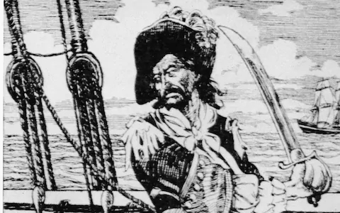

William Kidd

Captain William Kidd started out his career as a pirate hunter, not a pirate!
He sailed from England in 1696 with orders to attack pirates and the French wherever he could find them.
Soon he was pressured by his crew to commit acts of piracy.
He returned to England to clear his name but was instead jailed and eventually hanged as a pirate.
William Kidd's Pirate Ship, "Adventure" - a specially designed warship with 30 cannons and 100 skillful crew members
William Kidd's pirate flag